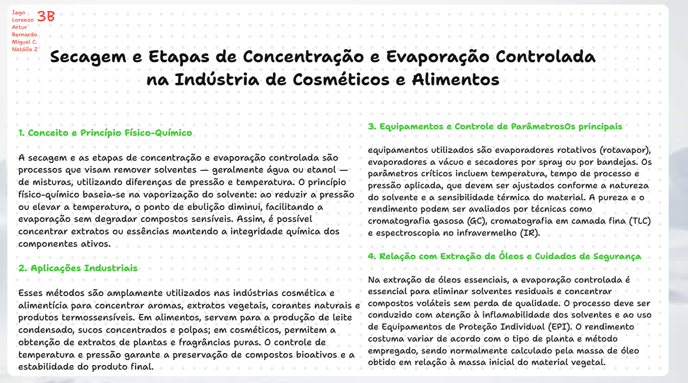
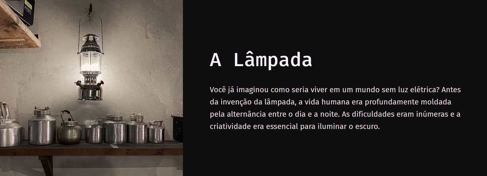

Essa atividade consiste em uma pesquisa em grupo sobre métodos de separação e análise química, com foco em aplicações reais e princípios físico-químicos. Cada grupo ficará responsável por um método específico, produzindo uma tabela explicativa, um painel síntese no Padlet e uma apresentação oral de 3 minutos. A pesquisa deve usar fontes confiáveis, linguagem científica objetiva e exemplos industriais, relacionando o método ao processo de extração de óleos essenciais estudado em aula. O objetivo é compreender como propriedades da matéria permitem separar, purificar e analisar substâncias na indústria e no laboratório.
Nos dois primeiros momentos, tivemos uma explicação teórica sobre o conteúdo e como fazer os cálculos estequiométricos. Depois, formamos grupos para fazer uma pesquisa orientada.
Focamos nas proteínas, vitaminas e ácidos nucleicos. Fizemos uma revisão teórica, montamos uma tabela relacionando doenças e essas biomoléculas.
Acessar Atividade 